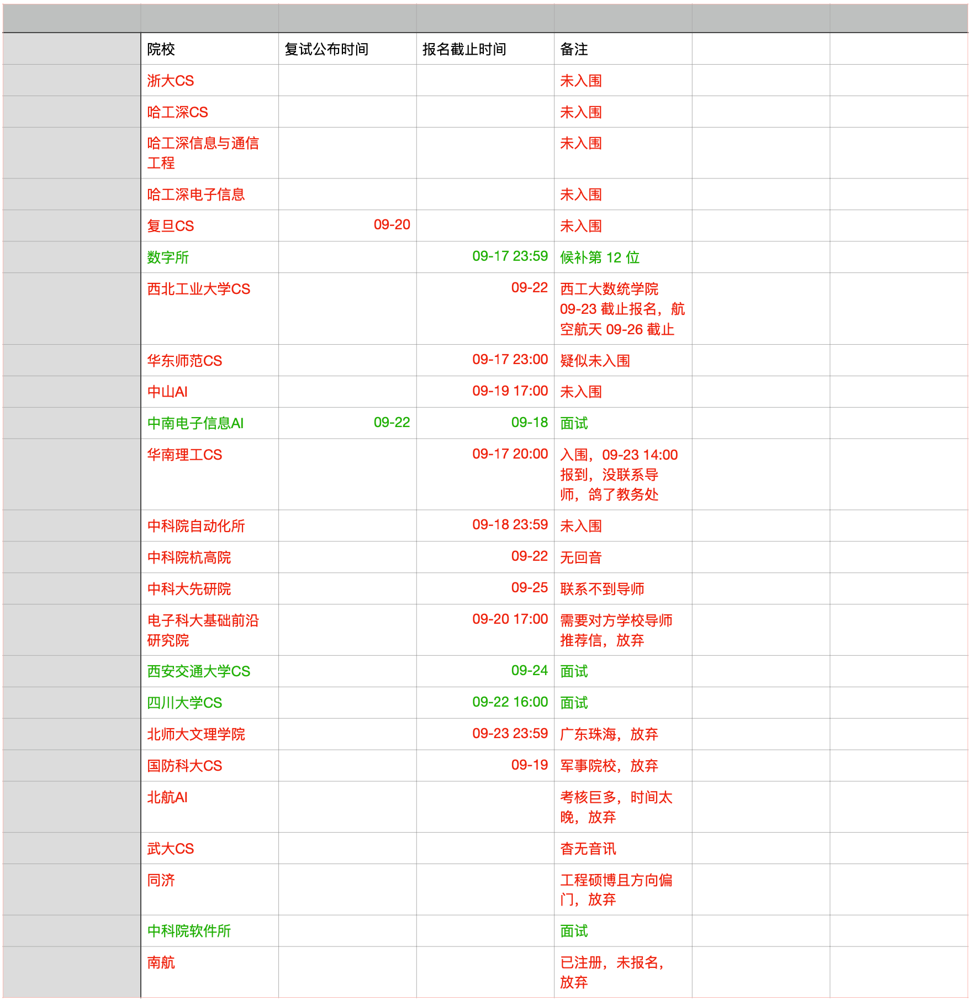

5 月 30 号中科大官网更新导师名单。5 月 31 号周五 11:12，我发出一份联系中科大导师的邮件。6 月 1 号周六 11:44，我收到导师的回复，他对我很感兴趣。6 月 5 号，我添加了导师微信。6 月 9 号，导师决定要我，给我口头 offer。6 月 29 号，导师邀请我参加比赛并加上师兄微信。7 月 5 号，我再次确认，导师说铁 offer。7 月 15 号，我再次有点害怕，导师打来电话安慰说没问题放我放心。7 月 19 号，导师约我在一个校外的西餐厅吃晚饭。7 月 20 号晚上，导师喊上另一位同事，一起把我提前模拟面试，并提出幻灯片修改意见。7 月 22 号，中科大组委会考核结束，最后拿到优营。8 月 3 号，导师询问我是否确定加入团队，我确定，然后参与比赛项目 APP 界面开发。9 月 10 号早上，导师给我推荐书籍，说我未来关注点在于数据、AI、大模型、代码。9 月 10 号上午，导师突然发来一条“我是否有备选方案”的消息。9 月 11 号，导师开始敷衍我。9 月 23 号，我被导师鸽了。
我身边的好朋友，一直认为中科大是绝对稳了，我也为了中科大放弃其他院校 offer，只是没想到，演了这么一出戏。导师跟我说，今年学校压缩名额，所以把我的 offer 给科大本科的学生，我很平静地回复“收到”。
把我唯一的底牌给抽走，让我匆匆忙忙联系其他院校导师（实际上，那个时间点几乎联系不到老师），这些其实并没有让我难过，而真正让我难过的是，我无意间发现他被科大本科学生鸽了，居然背着我偷摸找候补，而且被我发现两次。
也是那么一刻，我对老师不再信任，加之西工大夏令营运气不好，又被老师坑，还有绿群里不少朋友被老师放鸽子，尤其“天黑哥”，被天津大学放了几回鸽子，所以我黑化了。
我的预推免，正式开始。

相比于夏令营的写作方式，预推免的风格全然不同，这是因为从 09-11 到 09-21 十天期间，我每天都在申请院校预推免和联系导师，我整个保研发出去 575 份邮件，其中有差不多 500 份就是这十天内发的，而有效 offer 邮件只有 2 份，所以没有什么好写作记录的。
我的预推免全部集中在 928 前的一周内，经历过多，时间过快，不好写成游记形式，因此，我把一些我觉得重要的面试、考核题等保留下来。